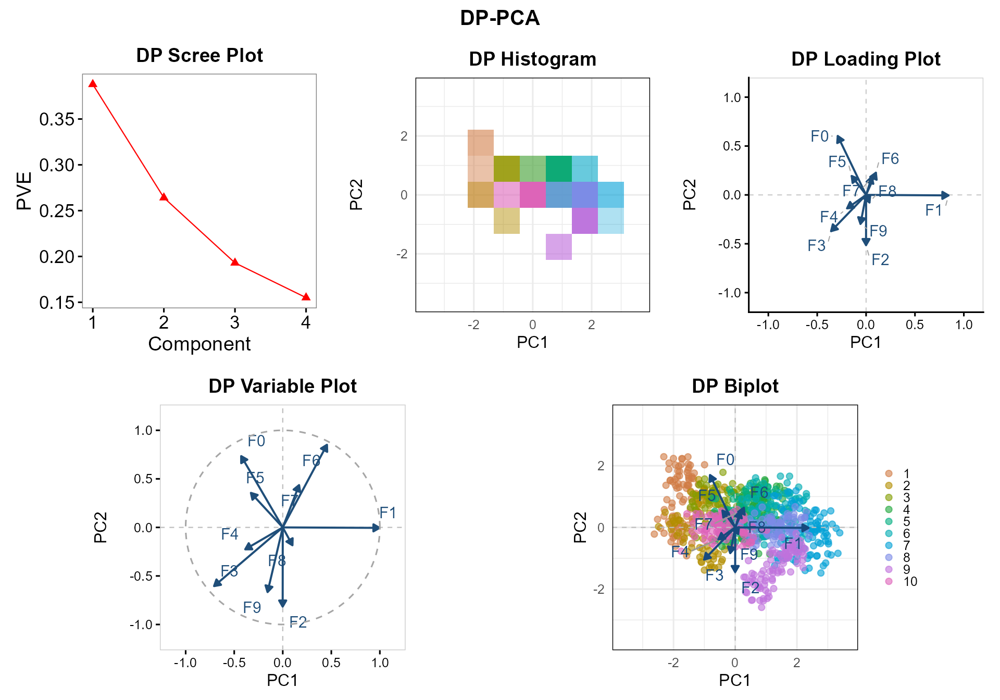

DP PCA Visualization
Source:vignettes/tutorials-dp-visualization.Rmd
tutorials-dp-visualization.RmdWhat you will make
This tutorial uses the vowel dataset to create a grouped
PCA analysis with dp_pca(). One fitted object supplies five
displays:
| Display | What it shows | A useful question |
|---|---|---|
| Scree/PVE | Estimated variation along the retained PC directions | How is the estimated variation distributed across components? |
| Score | A private histogram or synthetic points on two PC axes | How do the vowel groups overlap in this view? |
| Loading | Coefficients of the PC direction vectors | Which acoustic features contribute to the displayed directions? |
| Variable | Correlation-style variable coordinates | How strongly do the retained components represent each feature? |
| Biplot | Score points and variable arrows together | How do the displayed observations and features relate geometrically? |
This tutorial focuses on R arguments, stored results, and plots. For the mathematics underlying all five displays, see Theory of DP PCA Visualizations. The individual estimation mechanisms are covered by Theory of DP Loading, Theory of DP Scree, and Theory of DP Score. For general setup and input requirements, see Getting Started.
1. Load the vowel data
library(dppca)
data("vowel", package = "dppca")
X <- vowel
dim(X)
#> [1] 990 14
names(X)
#> [1] "Split" "Speaker" "Sex" "F0" "F1" "F2" "F3"
#> [8] "F4" "F5" "F6" "F7" "F8" "F9" "Class"vowel contains 990 observations and 14
columns. For more details, see the documentation for vowel.
| Columns | Contents | Role in this tutorial |
|---|---|---|
F0–F9
|
Ten numeric acoustic features | PCA variables |
Split |
Training/test membership | Excluded categorical column |
Speaker |
Speaker identity, with 15 levels | Excluded categorical column |
Sex |
Speaker sex | Excluded categorical column |
Class |
Vowel category, with 11 levels | Group label, excluded from PCA variables |
Keep X as a data frame. dp_pca() retains
numeric features and reports the excluded columns. There is no need to
manually remove the four categorical columns or convert them to
numbers.
2. Create the privacy allocation
Integrated PCA needs three components: loading,
scree, and score. When
split is omitted, dp_pca() gives each stage
one third of the total epsilon and delta:
privacy <- privacy_control(eps = 10, delta = 1e-4)
privacy$total
#> eps delta
#> 1e+01 1e-04
privacy$budgets
#> $loading
#> eps delta
#> 3.333333e+00 3.333333e-05
#>
#> $scree
#> eps delta
#> 3.333333e+00 3.333333e-05
#>
#> $score
#> eps delta
#> 3.333333e+00 3.333333e-053. Fit DP PCA analysis
In dp_pca(), exactly one method must be selected for
each estimation step:
-
Scree estimation: One of
"clipped","pmwm", or"huber". See the DP Scree Plot Tutorial for details. -
Score histogram estimation: One of
"add"or"sparse". See the DP Score Plot Tutorial for details.
Main arguments of dp_pca()
| Argument | Description |
|---|---|
X |
Input data matrix or data frame with at least two numeric variables. Non-numeric columns are excluded from the PCA features. |
privacy |
Privacy settings from privacy_control(),
allocated to loading, scree, and score estimation. |
scree |
Required list specifying k,
method, control, and optionally
mono. Defaults within the list are k = NULL
(all components), method = "clipped", and
mono = TRUE; a method-specific control is
required. |
score |
List specifying the private histogram
method ("sparse" or "add") and
bins. Defaults: method = "sparse",
bins = c(20, 20). |
axes |
Two distinct PC indices used for the score plot and
biplot. Default: c(1, 2). |
group |
Optional grouping column name or vector of group
labels. The grouping column is excluded from PCA features. Default:
NULL. |
non_private |
Whether to compute and store an ordinary PCA reference
for comparison. If TRUE, plot() automatically
displays both ordinary and DP results; if FALSE, only DP
results are shown. Default: FALSE. |
V_dp |
Optional previously estimated full private PC direction
matrix. When supplied, loading estimation is skipped. Default:
NULL. |
cpp.option |
Whether to use the compiled implementation when
estimating private PC directions internally. Default:
TRUE. |
For detailed explanations of the scree and
score options, including available estimation methods and
their tuning parameters, see the DP
Scree Plot Tutorial and DP
Score Plot Tutorial, respectively.
The V_dp argument allows previously estimated private PC
directions to be reused in dp_score(). For a detailed
example, see Reusing
Private PC Directions in the DP Scree Plot tutorial.
Estimate four scree components and use PC1 and PC2 for the score grid:
set.seed(123)
pca_fit <- dp_pca(
X,
privacy = privacy,
scree = list(
k = 4,
method = "clipped",
control = clipped_control(C_clip = 3)
),
score = list(method = "sparse", bins = c(9, 9)),
axes = c(1, 2),
group = "Class"
)
#> Warning: PCA: 10 numeric variables used.
#> Excluded from PCA (4): Split, Speaker, Sex, Class.
#> Grouping variable: Class
#> Groups (11): 0, 1, 2, 3, 4, 5, 6, 7, 8, 9, 10
pca_fit
#> Differentially Private PCA
#> Data: 990 observations x 10 variables
#> Components: 10 PC directions; 4 scree estimates
#> Score axes: PC1, PC2
#> Group variable: Class
#> Groups: 0, 1, 2, 3, 4, 5, 6, 7, 8, 9, 10
#> Methods: scree = clipped ; score = sparse
#> Total privacy budget: eps = 10 ; delta = 1e-04
#> Non-private reference: not storedThe fit reports that ten numeric variables are used, that
Split, Speaker, Sex, and
Class are excluded from PCA, and that the grouping variable
is Class. It also lists the 11 observed vowel groups.
4. Inspect the results
The summary reports estimated component importance, the allocated privacy budgets, selected axes, and group information.
pca_summary <- summary(pca_fit)
pca_summary
#> DP PCA Summary
#> Data: 990 observations x 10 variables
#> Components: 10 PC directions; 4 scree estimates
#> Score axes: PC1, PC2
#> Methods: scree = clipped ; score = sparse
#> Group variable: Class
#> Groups: 0, 1, 2, 3, 4, 5, 6, 7, 8, 9, 10
#>
#> DP component importance:
#> PC1 PC2 PC3 PC4
#> Eigenvalue 1.3422 0.9141 0.6679 0.5366
#> PVE 0.3878 0.2641 0.1930 0.1551
#> Cumulative PVE 0.3878 0.6520 0.8449 1.0000
#>
#> Proportions are normalized over 4 estimated components.
#>
#> Allocated privacy budget:
#> eps delta
#> Loading 3.333 3.333e-05
#> Scree 3.333 3.333e-05
#> Score frame 1.167 0.000e+00
#> Score histogram 2.167 3.333e-05
#> Total 10.000 1.000e-04
#>
#> Non-private reference: not stored| Stored component | Contains |
|---|---|
pca_fit$directions |
The full 10-by-10 private direction matrix |
pca_fit$scree, $pve
|
Four estimated scree values and their normalized contributions |
pca_fit$frame, $hist
|
The private frame and pooled score histogram |
pca_fit$score_groups |
Private histograms for the vowel groups |
pca_fit$metadata$privacy$total,
$budgets
|
Total and stage-specific privacy budgets |
pca_fit$metadata$group_name,
$group_levels
|
The selected group name and observed group levels |
pca_fit$nonprivate |
The optional ordinary-PCA comparison results |
pca_fit$metadata$privacy$total
#> eps delta
#> 1e+01 1e-04
pca_fit$metadata$privacy$budgets
#> $loading
#> eps delta
#> 3.333333e+00 3.333333e-05
#>
#> $scree
#> eps delta
#> 3.333333e+00 3.333333e-05
#>
#> $score
#> eps delta
#> 3.333333e+00 3.333333e-055. Create all five displays
The shortest way to draw the five plots from an existing fit is:
plot(pca_fit)
#> Warning: The private histogram contains no positive probability mass; no
#> synthetic score points were generated.
If fitted with non_private = TRUE, it automatically
shows the ordinary reference page first, followed by the DP page.
set.seed(456)
pca_plots <- plot(
pca_fit,
display = "all",
scree = list(
type = "pve", # "pve" or "scree"
plot_control = NULL
),
score = list(
type = "sample", # "histogram" (default) or "sample"
plot_control = NULL
),
loading = list(
type = "vector", # "vector" (default), "point", or "heatmap"
heatmap_components = NULL,
plot_control = NULL
),
variable = list(
plot_control = NULL
),
biplot = list(
alpha = 0,
labels = TRUE,
plot_control = NULL
),
sampling = sampling_control( # Shared by score and biplot
method = "uniform",
sample_size = NULL,
bandwidth_scale = NULL
),
center = TRUE, # Shared by score and biplot
variables = 10, # Shared by loading, variable and biplot
base_size = 12
)| Argument | Description |
|---|---|
display |
Selects which of the five PCA plots to display.
Default: "all". |
sampling |
Controls synthetic point sampling for the score sample plot and biplot. |
center |
Applies the same display-centering setting to the score
plot and biplot. Default: TRUE. |
variables |
Selects variables displayed in the loading, variable,
and biplot panels. Default: 10. |
base_size |
Sets the base font size. Default: 12. |
The sampling argument controls how synthetic points are
generated from the score histogram. The same sampled points are used in
the score sample plot and biplot. See the DP Score Plot Tutorial for
details.
By default, variables = 10 selects the 10 variables with
the largest Euclidean norms of their private loading coefficients on the
two selected PC axes. The same variables are displayed in the loading,
variable, and biplot panels, including non-private comparisons. See the
DP Loading Plot Tutorial for
details on variable selection.
The center argument controls whether the DP score and
biplot displays are shifted using the privately estimated score-frame
midpoint. By default, center = TRUE places the private
frame center at the origin and allows the biplot variable arrows to
start at
.
See Display
Centering for details.
For plot appearance, replace plot_control = NULL with a
suitable control:
-
Scree:
scree_plot_control(...). See the DP Scree Plot Tutorial. -
Score:
score_plot_control(...). See the DP Score Plot Tutorial. -
Loading:
loading_plot_control(...). See the DP Loading Plot Tutorial. -
Variable and biplot:
plot_control = list(...)for colors, arrow width, label size, and other display settings.
6. Reuse and export the results
The return value of plot(pca_fit) is a list, not a
special plot class.
| Component | Contains |
|---|---|
pca_plots$private$plots |
Named ggplot panels |
pca_plots$private$page |
The assembled page grob |
pca_plots$private$sampled_points |
Generated points before display centering and biplot scaling |
pca_plots$private$biplot |
Biplot coordinate and scaling metadata |
pca_plots$nonprivate |
The corresponding ordinary display components, when shown |
# One figure
ggplot2::ggsave(
"vowel-private-biplot.png",
plot = pca_plots$private$plots$biplot,
width = 7, height = 6, dpi = 300
)
# One complete saved page
grDevices::pdf("vowel-private-pca.pdf", width = 12, height = 8.5)
grid::grid.newpage()
grid::grid.draw(pca_plots$private$page)
grDevices::dev.off()
# The fit can be saved separately for a later R session.
saveRDS(pca_fit, "vowel-pca-fit.rds")For complete argument descriptions, see ?dp_pca,
?plot.dp_pca, and ?sampling_control.
Previous: DP
Score Plot
Tutorial overview: Choose a
starting point